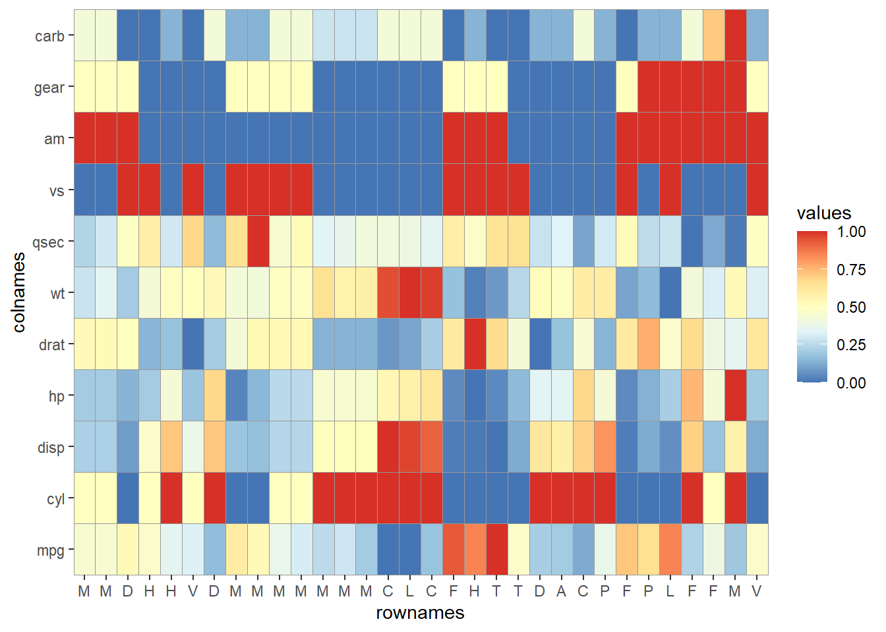
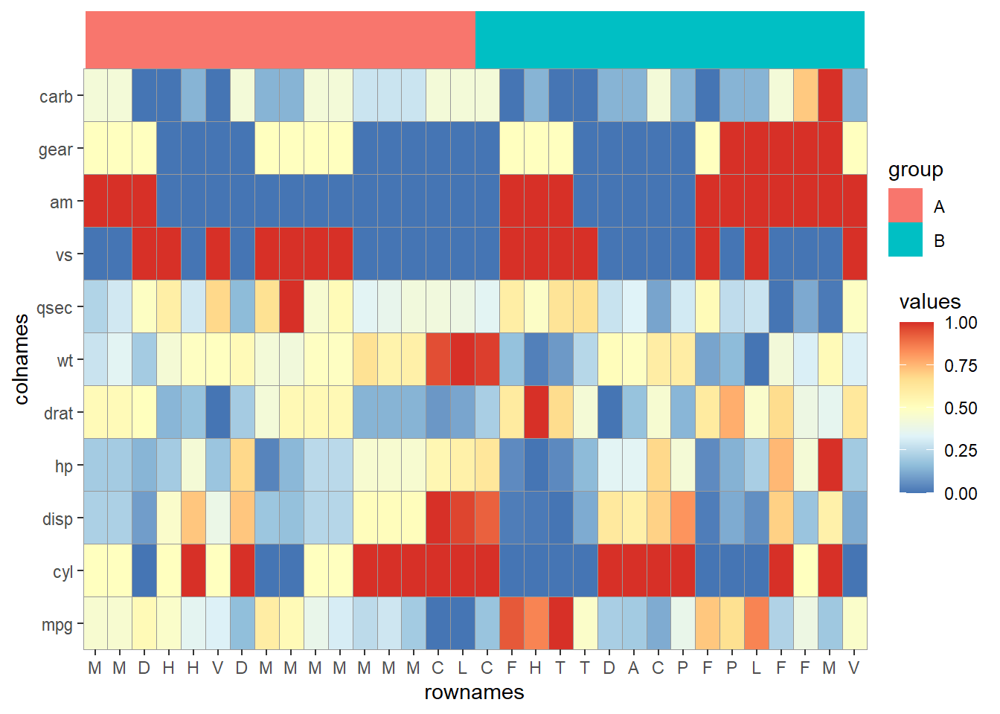

以mtcars每一列进行归一化的数据为例，
normalize <- function(x){
return((x- min(x)) /(max(x)-min(x)))
}
mt <- map_dfc(mtcars,~normalize(.x))
`%<>%` <- magrittr::`%<>%`
mt %<>% mutate(rownames = rownames(mtcars)) %>%
pivot_longer(cols = mpg:carb,names_to = "colnames",values_to = "values")
mt %>% DT::datatable()然后先规定一下x轴，y轴的列顺序,【x轴标签改成首字母。】
p <- p + scale_x_discrete(expand = c(0,0),limits = unique(mt$rownames),
labels = unique(mt$rownames) %>% str_sub(start = 1,end = 1)) +
scale_y_discrete(expand = c(0,0),limits = unique(mt$colnames))热图
修改颜色。
pp1 <- p1 +scale_fill_gradient2(low = "#132B43",high = "#56B1F7")
pp2 <- p1 +scale_fill_viridis_b()
pp3 <- p1+scale_fill_gradient2(low="blue", mid="white",
high="red", space ="Lab",midpoint = 0.5)
pp4 <- p1 + scale_fill_gradientn(colours = rainbow(5))
library(patchwork)
(pp1+pp2)/(pp3+pp4)
使用pheatmap默认的颜色，即RcolorBrewer包的调色板RdYlBu。

添加color bar注释
tbl <- tibble(rownames = unique(mt$rownames))
tbl %<>% mutate(group = c(rep("A",n()/2),rep("B",n()/2)))
anno_colorbar <- ggplot(tbl,aes(x = rownames, y = 1)) +
geom_raster(aes(fill = group)) +
theme_void() + scale_x_discrete(expand = c(0,0)) +
scale_y_discrete(expand = c(0,0))
(p1+scale_fill_distiller(palette = "RdYlBu")) %>%
aplot::insert_top(anno_colorbar,height = 0.1) 可以看到上面稍微没有对齐